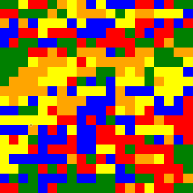
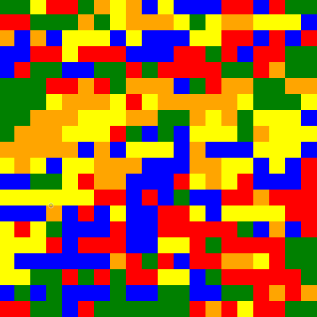
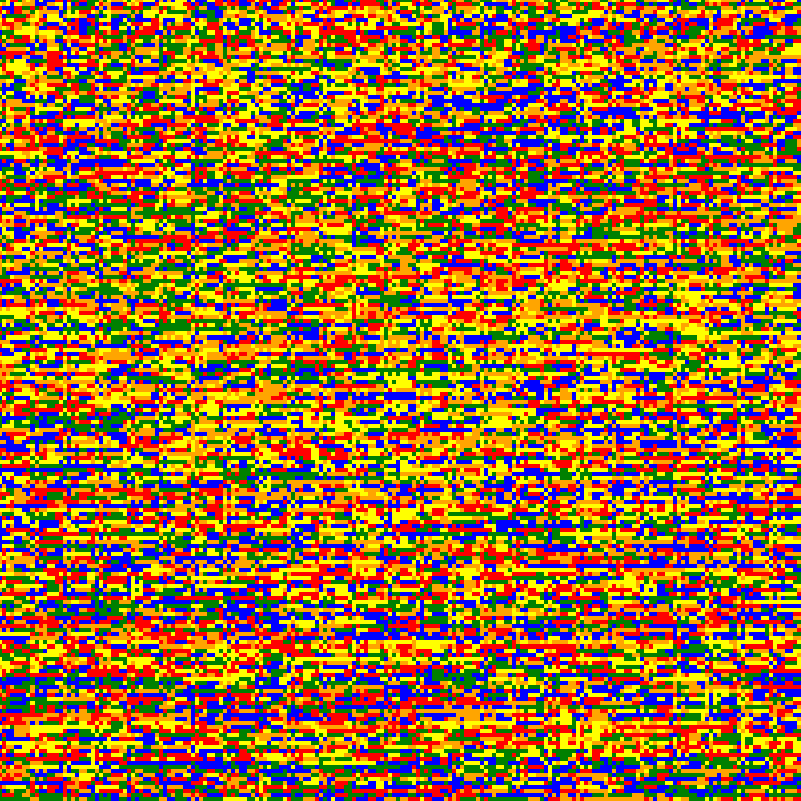
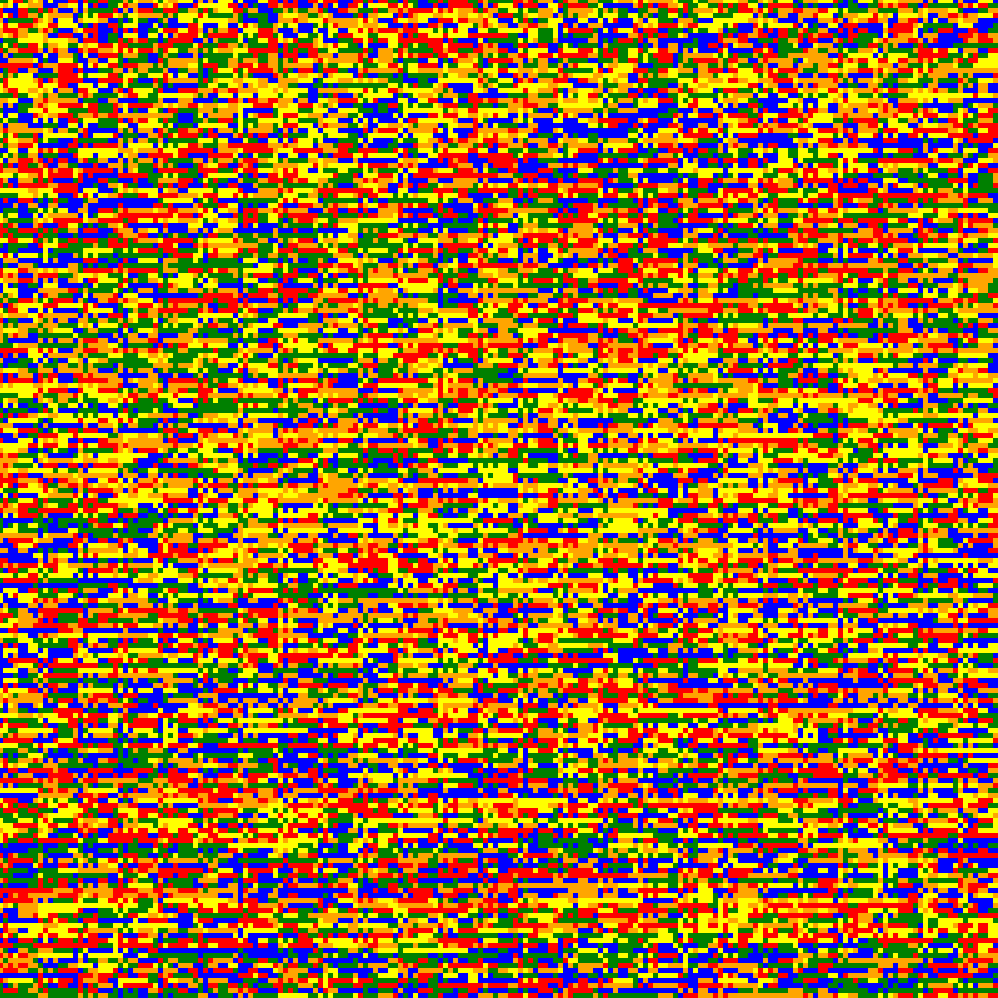

Collatz Conjecture Art

 



 



Collatz Conjecture (or the 3n+1 problem) is a famous idea within the field of mathematics. It is known in the field for being an unsolvable problem with "experienced mathematicians even going as far as warning up-and-comers to stay away". The idea behind the conjecture is actually quite simple: taking any number, if it is even, divide it by 2, and if it is odd, multiply it by 3 and add 1. Continue this process until you reach 1. The conjecture states that no matter what number you start with, you will always reach 1. Mathematicians have tried for ages find a pattern in this process, but all have failed.
I had the idea to create art from this conjecture a few years ago, and decided to finally take up the project. My motivation was that in displaying the pattern visually, I might be able to figure something out, but I also figured that no matter what, it would come out looking pretty cool.
Looking at the art, each "pixel" or square, represents one value. The top left pixel in each generated image represents the value 1, and the value to its right represents 2 and so on. The color that each square recieves is a result of running collatz conjecture on a given number. For example, the value 3 would follow this sequence (3 -> 10 -> 5 -> 16 -> 8 -> 4 -> 2 -> 1). This is a total of 7 fluctuations. The art depicts the number of fluctuations. For the rainbow generated images, the color is determined using modulus, as there are only 6 colors used, so the color is determined by colors[fluctuations%6]. For the "heat map" (or orange) generated images, it displays the pure fluctuation values, with a color being closer to orange representing a higher number of fluctuations.